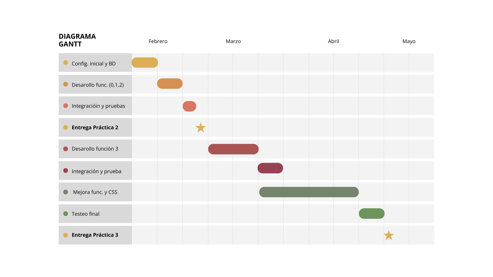

Miembro 1: Seguridad y Usuarios (Funcionalidad 0)
- Objetivo: Gestión integral de usuarios y control de acceso.
- Tareas: Registro, Login, Logout, Edición de Perfil, Subida de Avatar y Gestión de Roles (Cliente, Gerente, etc.).
Este documento detalla la estrategia de desarrollo, el reparto de responsabilidades y el cronograma semanal desde el inicio de la implementación hasta la entrega final.
Para equilibrar la carga de trabajo y cumplir con los requisitos académicos, asignamos un módulo funcional principal a cada miembro. La Funcionalidad 2 se ha dividido en dos partes debido a su extensión.
Planificación semanal alineada con las entregas obligatorias del curso.
| Semana | Fechas | Objetivos Grupales |
|---|---|---|
| 1 | 16 Feb - 22 Feb | Configuración: Creación de BD y repositorio. Inicio de módulos base (Login, lista Productos, carrito básico). |
| 2 | 23 Feb - 01 Mar | Desarrollo Core: CRUD completo, subida de imágenes, confirmación de pedido y cambio de estados. |
| 3 | 02 Mar - 06 Mar |
Integración y cierre: Pruebas de flujo completo.
Hito: Entrega Práctica 2 (Viernes 06/03). |
| Semana | Fechas | Objetivos Grupales |
|---|---|---|
| 4-5 | 09 Mar - 22 Mar |
Funcionalidad 3 (Cocina): Implementación de la vista de cocineros.
Integración y test funcionalidad 3 (Cocina): Comprobar que la funcionalidad 3 cumpla con los requisitos y funcione correctamente |
| 6-9 | 23 Mar - 19 Abr |
Optimización: Mejora en el funcionamiento y rendimiento de las funcionalidades.
Frontend: Mejora presentación de la página añadiendo CSS. |
| 10-11 | 20 Abr - 03 May |
Cierre: testing final y documentación.
Hito: Entrega final (Domingo 03/05). |
Representación visual de la línea temporal del proyecto:

Cronograma de tareas desde el 16 de febrero hasta el 3 de mayo.